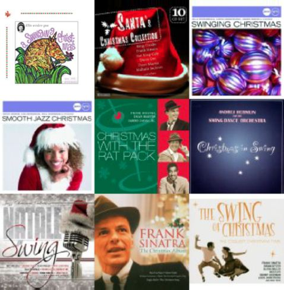

… und deshalb lieben wir ihn. Anhörenswert, drüben bei derfettemann:
yeah, schnipp, schnipp
[via Johanna im Fratzenbuch, bild aus der Switz]
… und deshalb lieben wir ihn. Anhörenswert, drüben bei derfettemann:
yeah, schnipp, schnipp
[via Johanna im Fratzenbuch, bild aus der Switz]
Was gibt’s schöneres? Remy Kouakou Kouame und Moe Sakan hauen kräftig einen Raus:
Louis Armstrong – Down By the Riverside:
Hach, me likes 🙂
[via Oli, FB]
Ich habe überlegt, eurem Wunsch nachzukommen, und vor der Party am Freitag einen Auffrischungskurs zu geben. Ich denke es reicht 1,5 h. Für 10 Euro seid ihr gern wieder dabei! Werden dann alles nocheinmal üben, auch das Ende, auch vielleicht eine hübsche Formatierung, die Boogies und den Shorty George werden wir dann auch genauer unter die Lupe nehmen. – Dann seid ihr für den Stageclub bereit 😉 –Sagt mir bitte per Mail bescheid (Mittwoch), weil ich den Kurs nur machen kann, wenn 5 Personen zusagen. Sonst kann ich den Saal nicht bezahlen.Ich würde den Kurs um 19:00 beginnen. Dann Sind wir so 20:45 fertig… ich denke, dass ist eine gute Zeit…Ort des Geschehens ist wieder Daimlerstraße 71 aFreu mich auf euch!
via Ruby
ruby_n@gmx.de
http://danceshake.npage.de
Ruby in Action gibts hier: http://www.youtube.com/watch?v=ZZM402vL9XU&feature=player_profilepage
Die hamburger Dixie Swing Band Jazz Puls gibt am 1.2. ein Konzert im Cotton Club, Alter Steinweg 10. Ich war da letztens mal und hab mich gefragt, weshalb da eigentlich keine Tänzer sind. Immerhin ist das der älteste Jazz Club Hamburgs. Hörpoben der Band gibts hier somebody stole my gal oder auf der Website unter http://www.jazzpuls.de/
Durchaus tanzbar fand ich die Hot Shots. Sie spielen am 4.2 ebenfalls im Cotton Club.
Wer kommt mit neue Tanzböden testen?
Kennt ihr die Website The SixtyOne?? Das ist yet-another-listen-music-online-website aber in einem ganz anderen, anfangs ungewohnten, Format: Hier gibts keine ewig großen Verzeichnisse, Listen oder Kategorien, sonder – schlicht und einfach – einen MusikPlayer. Die Ganze Website ist quasi der
Das ist ideal zum Stöber und so hab ich schon einige super Songs dort gefunden, wie z.B. The Golden Age von The Asteroids Galaxy Tour Mal ausprobieren:
http://www.thesixtyone.com/posted/?goto_song_id=vmRTpeFnm7e
»Eine ‚Swinging Christmas‘, die das Lametta am Christbaum mitswingen lässt!«
Gerade hier noch eine schöne Weihnachts-Swing-Musik-Cover Pladde von der HR3 Big-Band entdeckt. Inklusive mit Hörproben hier. – Ach wie schön 🙂

Aus irgendwelchen Gründen liegen Swing und Weihnachten immer sehr eng zusammen, schaut nur mal bei Amazon, das ist voll mit Swinging Christmas Musik. Na dann, let the Besinnlichkeit begin!
Wir wünschen allen unseren Lesern und Tänzen ein schönes, fröhliches Weihnachtsfest!
ach, und der Tanz dazu:
http://www.youtube.com/watch?v=32A8VQ16ctw
Also, wo wir schon bei TV Berichten zum Swing und Jazz sind, darf meiner Ansicht nach auch dieser überaus sehenswerte Beitrag auf Arte nicht fehlen 🙂 Momentan kann die Sendung noch über Arte+7 angesehen werden.
http://videos.arte.tv/de/videos/harlem_in_montmartre-3594920.html
Ganz nebenbei gibts dort auch Hintergrundinfos über Sidney Bechet und andere Größen der Swingmusik.
Danke Sandra für den Hinweis auf diese Sendung!
Ahrg, fast verpasst – aber lieber zu spät als nie, somit:
3sat strahlt zur Zeit eine zwölfteilige Doku-Reihe über die Geschichte des Jazz aus. Jeden Tagum 12.00 Uhr wird eine weitere Episode des Jazz‘ behandelt. Gerne hätte ich natürlich „Swing 1937 bis 1941“ und „Der Swing geht an die Front 1941 und 1942“ gesehen – leider verpasst 🙁 Eine Übersicht aller Episoden und Sendetermine findet ihr hier:
http://www.3sat.de/page/?source=/musik/149361/index.html
Ich denke das wird bestimmt noch öfters wiederholt, also mal Augen offen lassen – oder gibt’s das sogar im Netz??
Für alle ungeduldigen, hier eine Schnellzusammenfassung in 165 Sekunden:
[via DJMQ]
OMG! Ja, ist den heute schon Weihnachten?! Jazz & Milk, das Münchner Jazz/Swing-Funk-Breakbeat-Electro Label, hat gefühlt ihre kompletten musikalischen Schätze auf die SoundCloud geschmissen: Dusty, Rube, Free the Robots & Co – alle sind da – wie auch solch‘ schöne Compilations:
[soundcloud url=“http://api.soundcloud.com/playlists/479936″ height=200]
und:
[soundcloud url=“http://api.soundcloud.com/playlists/479928″ height=200]
oder:
[soundcloud url=“http://api.soundcloud.com/playlists/480147″ height=200]
Wahh, geilomat!
Am vergangenen Wochenende entdeckte ich die Templeton Twins. Sehr charmant wagen sich die Herren daran, einige wirklich bedeutende Songs der Musikgeschichte zu verswingen. Das ist ihnen meiner ansicht nach sehr gelungen. Die LP „Trill It Like It Was“ ist schon etwas älter, wurde aber wohl gerade „digitaly remastered“. Sehr liebevoll bewegen sich die Songs so um die 110 – 130 bounces per minute. Sehr passend zur verschneiten, bersinnlichen Jahreszeit, mit Tee, Kamin und Tanztee finde ich z.B. ihre Version von Light My Fire von den Doors. Das wäre doch auch was für den NSG X-mas Swing heute abend, oder? 🙂 Habt ein Ohr:
zum Reinhören gehts zu Amazon …
So, damit ist auch endlich der Electro-Swing Trend in der Hauptstadt angekommen:
Am Freitag startet Berlins first and biggest Electro-Swing Party im [qype id=“18575″].
Schaut euch nur dieses Aufgebot an:
Wuhuuuu, Berlin – ick liebe dir!
-> http://electroswingclub.de/
[via Dirty Honkers Website]
Schaut Euch an was man mit Charleston alles anstellen kann …
Das Video stammt vom diesjährigen Crazy Ryhtm Challenge in Frankreich.
ähm. ICH WILL DAS AUCH KÖNNEN!!!!


Wer Nachschub an heissen Swing Musik Scheiben für die klaten Tage braucht, sollt mal bei Lady Lucky Club aus London vorbei schaun. Dort gibt’s eine Reihe an verschiedener Swing Sampler mit Bester Auswahl – ideal als Weihnachtsgeschenk:
Hot underground soundwaves from the late 40’s to the mid 60’s. Rare dance tunes that will keep you on the dance floor.
http://www.ladyluckclub.co.uk/merch.php?rad=on
[Danke an Jörg H. für den Tipp]